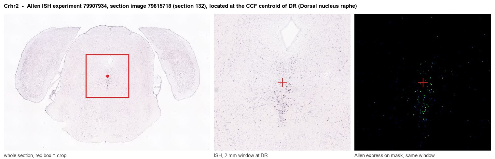
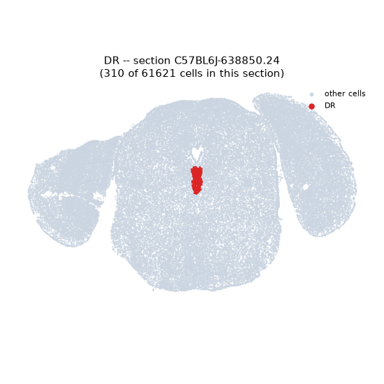
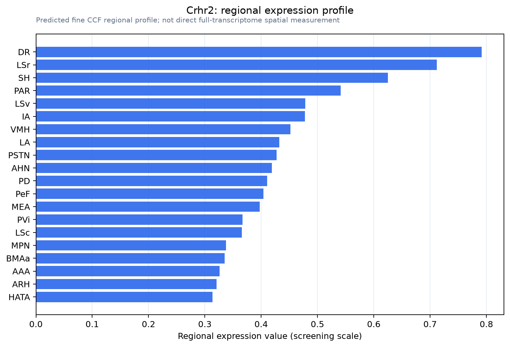

Crhr2
Corticotropin-releasing hormone receptor 2 (CRH-R-2) (CRH-R2) (CRF-RB) (Corticotropin-releasing factor receptor 2) (CRF-R-2) (CRF-R2) (CRFR-2) (Heart and muscle corticotropin-releasing factor receptor
Spatial tier: REGION_BIASED · Class: GPCR · Top region: DR (Dorsal nucleus raphe) · Positive regions: 32/554
Function in DR: evidence, prediction, innovation
- Gene function
- CRHR2 encodes corticotropin-releasing factor receptor type 2, a class B GPCR signalling mainly through Gs and adenylyl cyclase-cAMP-PKA. Its preferred ligands are the urocortins rather than CRF, which it binds with lower affinity than CRHR1. CRHR2 mediates the slower recovery phase of the stress response, opposing CRHR1-driven arousal.
- Region function
- The dorsal raphe is the main source of forebrain serotonin; its subregions regulate anxiety, stress coping and behavioural flexibility.
- Published in this region
- direct Day et al. 2004 showed by dual in situ hybridisation that CRF-R2 mRNA concentrates at mid and caudal DR and, at mid-levels, is expressed exclusively in serotonergic neurons, while CRF-R1 is barely detectable. Pernar et al. 2004 found intra-DR urocortin II inhibits 5-HT neurons at low doses and excites them at high doses by disinhibition, blocked by antisauvagine-30. Waselus et al. 2009 showed stress recruits CRF-R2 to the plasma membrane while CRF-R1 internalises, switching the CRF response from inhibition to excitation. Lukkes 2008 and Forster 2008 showed DR CRF-R2 antagonism blocks CRF-evoked 5-HT release in accumbens and prefrontal cortex.
- Predicted function
- Prediction: CRHR2 is the stress-recruited gain switch on DR serotonin neurons, its trafficking deciding active versus passive coping. Conditional Crhr2 deletion in Tph2-positive DR neurons should abolish the post-stress shift to CRF-evoked excitation, cut stress-induced cortical 5-HT release, and bias mice toward passive coping after social defeat.
- Innovation
- ★☆☆☆☆ 1/5 CRF-R2 in the dorsal raphe has been characterised anatomically and behaviourally for two decades.
- Tools
- Crhr2 knockout, floxed and Crhr2-Cre lines; agonists urocortin II and III; antagonists antisauvagine-30 and astressin2-B; antalarmin for CRHR1 subtraction; Pet1-Cre and Sert-Cre.
- References
Direct evidence located at the region

Allen ISH experiment 79907934, section image 79815718 (section 132): the section that contains the CCF centroid of Dorsal nucleus raphe according to the Allen image-to-atlas alignment (reference_to_image), with a 2 mm window around that point. Left: whole section, red box = window. Middle: ISH signal. Right: Allen's expression-mask view of the same window. open this image in the Allen viewer
Direct spatial evidence

Regional expression figure

Predicted WMB × fine-CCF profile; not direct full-transcriptome spatial measurement.
Spatial profile
Evidence and specificity
- Evidence status
- PREDICTED_FINE
- Direct sources
- None; predicted localization only
- Exclusive threshold
- 12 positive regions out of 554
- Spatial specificity
- 0.303
- Top-region fraction
- 0.048
- Filter status
- PASS
Interpretation limits
- Cell-type-to-region projection is imputed expression, not direct spatial measurement.
- Adult reference atlases do not establish stability across age, sex, strain, state, or disease.
- Transcript abundance does not guarantee protein abundance or genetic-tool performance.